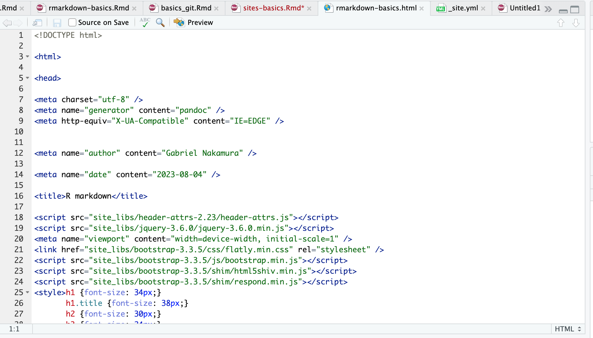
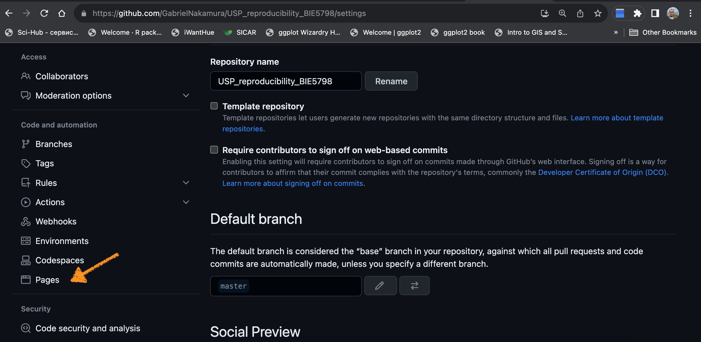
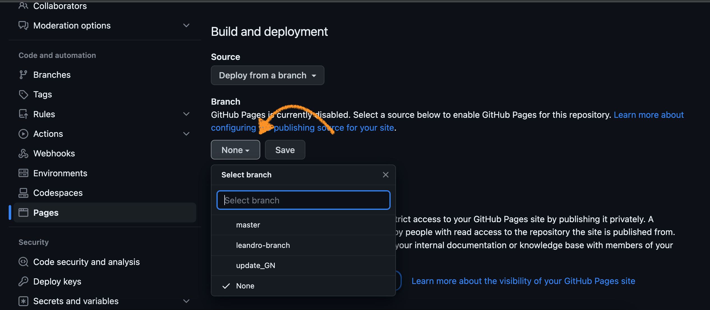
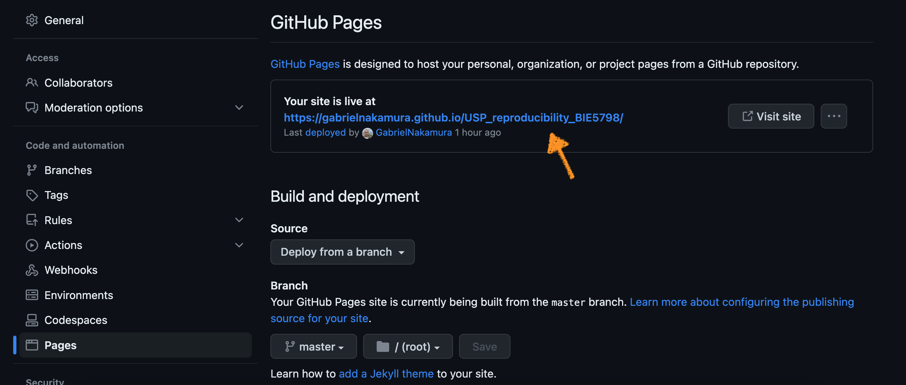

Na seção anterior aprendemos a montar um documento em R markdown. Mais importante, aprendemos a utilizar o R markdown para escrever em linguagens que não dominamos bem, por exemplo, html! Porém, um documento html por si só não é de muita utilidade. Abra um documento em html num editor de texto e veja como ele se parece.

Para dar sentido ao nosso html precisamos gerar um site, ou incluir ele em um site já existente. Aprenderemos a fazer isso nas próximas seções
Existem diferentes formas de fazer um deploy no seu documento, ou documentos, em html. Aqui vamos aprender a mais simples de todas. Se quiser mergulhar mais fundo nesse tema recomendo olhar alguns sites e materiais que ensinam como elaborar sites mais “rebuscados”.
Para pacotes estatísticos eu recomendo o pacote {pkgdown} do Hadley
Wickham
Para sites em formato blog eu recomento o tema Hugo-Apéro
Para sites acadêmicos eu recomendo o tema Hugo-academic
A forma mais simples de todas para elaboração de um site é a partir de um fork de algum repositório no GitHub que hospede um site que te agrade. Por exemplo, digamos que você gostou deste humilde site que hospeda o material desse curso. Para fazer um site seu você pode:
1 - Vá até o repositório deste site no GitHub
2 - Forke esse site para ele aparecer no seu GitHub
3 - Substitua os documentos do site original com o conteúdo que deseja hospedar em seu site
Você pode fazer isso com qualquer site, basta saber quais documentos
deve substituir pelos seus. Basicamente, no formato deste site, você
deve apenas substituir os arquivos .Rmd por arquivos que você gerou.
Além disso você precisa editar o arquivo _site.yml, que
informa o layout do site.
A forma mais fácil de hospedar seu site é utilizando o github pages. Uma ferramenta do próprio GitHub usada para gerar o site que tem seu código fonte hospedado em um repositório do GitHub. Para tanto, basta ativar o GitHub pages no repositório que você deseja que seja seu site
1 - Ativando o github pages

Em Settings no repositório que deseja construir um site,
irá achar a aba Pages, como demostrado na figura acima.
2 - Em seguida clique na aba pages e ative um repositório para
indicar ao github pages aonde ele deve buscar os arquivos para construir
o site. Como mostrado na figura abaixo, neste exemplo usaremos o branch
master (talvez ele seja main no seu
GitHub)

3 - Após selecionar o branch clique em Save e espere um
pouco. Logo o GitHub vai aparecer uma mensagem dizendo o domínio do seu
site, como mostrado abaixo

Seu site agora tem um domínio. Mas ainda é necessário alguns detalhes para que ele seja funcional. Se você usou a estratégia de forkar o repositório, como mostrado na seção acima, tudo que precisa fazer é ativar o github pages no repositório forkado. Caso começou um repositório do zero, e está adicionando documentos a ele, você precisará
4 - Adicionar um arquivo chamado index.Rmd que será a
sua página inicial
5 - Adicionar um arquivo chamado _site.yml que indicará
como o seu site será construído (Dê uma olhada no yml deste repositório
para ter uma ideia de como estruturar o site)
6 - Adicionar os documentos .Rmd na
raiz do seu diretório, sendo que todos devem ter o
output no formato html_document. Se os
documentos estiverem em outra subpasta o site não vai funcionar
7 - Penúltimo passo é renderizar os documentos no repositório
utilizando a função do pacote {rmarkdown} chamada
render_site da seguinte maneira:
8 - Último passo é dar um commit e um push.
Graças a um sistema chamado Continuous Integration do GitHub
Actions, o site será montado assim que o GitHub identificar um novo
push!
Pronto, agora você tem um site funcional